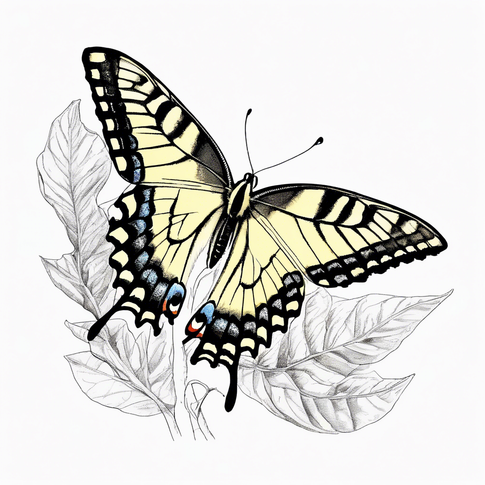

호랑나비는 우리나라에서 볼 수 있는 가장 큰 나비 중 하나예요. 노란색 바탕에 검은색 줄무늬가 있어서 호랑이를 닮았다고 해서 이름이 붙었답니다.
날개를 펼치면 10-12cm나 되는 큰 나비예요!
호랑나비는 산과 들에 사는 제비꽃을 특히 좋아해요. 애벌레는 제비꽃의 잎을 먹고 자라고, 어른 나비는 제비꽃의 꿀을 먹어요.

배추흰나비는 하얀색 날개를 가진 작고 귀여운 나비예요. 우리 주변에서 가장 흔하게 볼 수 있는 나비랍니다.
날개를 펼치면 4-5cm 정도의 크기예요.
배추흰나비의 애벌레는 초록색이에요. 배추잎 위에 있으면 잘 보이지 않아 적으로부터 숨을 수 있답니다!

산누에나방은 세계에서 가장 큰 나방 중 하나예요. 날개를 펼치면 25cm나 되는 거대한 크기랍니다!
아름다운 무늬가 있는 큰 날개를 가지고 있어요.
산누에나방은 어른이 되면 먹이를 먹지 않아요! 애벌레 때 저장한 영양분으로 살아간답니다.